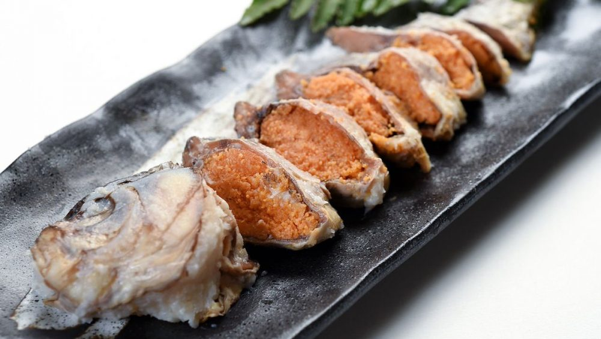

Outside of Japan, people often confuse sushi with either fish-wrapped rice balls or the raw fish itself, whereas in Japanese cuisine, only raw fish is referred to as sashimi.
Sushi (寿司 or 鮨) is the most famous Japanese food outside of Japan and one of the most popular dishes among Japanese people. In Japan, sushi is usually served on special occasions, such as celebrations.
"In past centuries, "sushi" referred to pickled fish preserved in vinegar. Nowadays sushi can be defined as a dish containing rice that has been prepared with sushi vinegar"*
The history of sushi began in Japan around the eighth century. The original type of sushi was first developed in Southeast Asia as a way of preserving fish in fermented rice. Around 1400s, the custom of eating rice with fish also spread. In the 1700s, vinegar was used in rice fermentation instead of lactose. Nowadays, sushi is one of the first forms of fast food closely associated with Japanese culture.
Narizushi (fermented sushi), known today as the original type of sushi, developed in Southeast Asia before spreading to southern China before making its way to Japan sometime in the eighth century. The process was to keep the fish good to eat as long as possible by salting the fish and then covering the fish with fermented rice, a traditional dish of lactose-fermented rice. Nari sushi is made from gutted fish stored in fermented rice for several months as a preservation method. They only ate the fish and threw away the rice because the rice was only used to keep the fish from rotting, all this process to get the important source of protein at that time.
The Oxford English Dictionary first mentions the word sushi in an 1893 book titled The Japanese Interior, where it states that "the locals offered us tea and sushi or rice sandwich". There is also mention of the word sushi in a Japanese-English dictionary from 1873, and in an 1879 article on Japanese cuisine in the journal Notes and Queries.
A report of sushi eating in Britain arose when the then Prince Akihito visited Queen Elizabeth II during her coronation in May 1953. In America in September 1953, Prince Akihito was reported eating sushi at the Japanese embassy in Washington when hosted by Ambassador Ekechi Araki (1891–1959).*3
With the opening of Kawafuku Restaurant in Little Tokyo, LA serving Japanese businessmen and their fellow Americans. A few sushi restaurants began to open outside the borders of Little Tokyo, and since this cuisine is different from the usual American cuisine, it began to attract Americans, especially celebrities from Los Angeles, due to the desire for change and innovation and to try new foods on American soil. And due to the different food cultures and the nature of eating in America, Japanese restaurants had to deal well with American demand and customers, so it was the California roll that took on the American character in terms of some ingredients and also the name. Because of the high acceptance of the California roll, this helped in its rapid spread in most Japanese restaurants in America, and this led to the spread of Japanese restaurants, as it spread in the late eighties in most major American cities.*4
At the present time, there are many types of sushi, and there are also many forms of the most basic types, but the types of ingredients are different and the calories are also different.
While the ingredients are the basis of each dish, we must take them into account and compare the ingredients and also compare the calories, as the origin of sushi was mainly preserving fish by fermenting it with rice, which means that the main ingredient is fish (protein) and the addition is rice (carbohydrates), and this analysis gives us aspects of comparison of components.
Types: There are many different types of sushi and the most popular ones are: Chirashizushi (scattered sushi)
Inarizushi (fried tofu with rice)
Makizushi (rolled sushi)
Narezushi (Aged sushi “fermented”)
Nigirizushi (hand-pressed sushi)
Oshizushi (pressed sushi)
Through the interactive chart, you can compare some other types in terms of calories.
No one denies the growth of the sushi industry market and the size of the resulting market in the United States in recent years, and some figures show what is really happening, as the number of sushi business restaurants was almost in 2012, and this business grew to 18703 in ten years, which made the growth rate of sushi business restaurants in The United States by 5.8%. As shown in the diagram.
Conclusion:
By observing all the stages of the Sushi dish’s transition from East Asia until its arrival in the United States and the various stages of change and development in each era, and with this explicit American name and the place of the invention of this dish and the compatibility with the taste of American society with ingredients and formation different from the original form of Japanese sushi, can we consider rolls Authentic and discrete California? Or is it a new dish that wasn't considered a sushi dish in the first place?
What I would like the reader to learn through this story is that food is changing and evolving like any type of technology, for example, but what happened to food is developing slowly to be noticed only by specialists and experts in food, and what was noticed in the story of California rolls is Sushi was actually developing, but slowly, but during the last decades, the development was faster, and it is now possible for the natural and non-specialized person in food to notice the development of sushi types, and this idea reflects that during the coming period, food development will be the new market, which helps in that development An amazing development in all technology, industry and other aspects of life...

Narezushi VS California Roll
In the end, whether California Roll Sushi or not, will this answer change its taste or its history, and do we really have to answer this question, or do we have to invent a new California Roll?